01 Exploring a Four-Phone Medium
Building a Game Around an Unfamiliar Medium
Population One started with an open design problem: what becomes possible when four phones are treated as one physical, reconfigurable game space?
We did not begin with a fixed puzzle set. We first needed to understand the medium itself. The team built many focused technical prototypes to test how phones could relate to one another through position, orientation, connection, separation, and movement. Those experiments gave us the raw material for the game.
The final experience follows Naiad, an explorer investigating the ruins of a forgotten civilization. Four players physically rearrange phones to reveal spaces, solve environmental puzzles, and move through a shared narrative about Earth's forgotten history.
My design work focused on turning those early experiments into a learnable game: evaluating interaction ideas, sequencing mechanics, mapping puzzle dependencies, testing player understanding, and shaping where narrative information entered the flow.
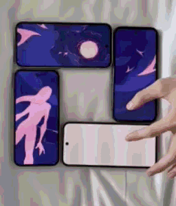
02 Defining My Design Focus
The team collaboratively defined the experience. My main contribution was player-facing game structure: how an unfamiliar interaction system became understandable, how individual mechanics became puzzles, and how those puzzles supported a coherent narrative arc.
Interaction R&D
Evaluated how players interpreted experimental four-phone interactions and which ideas were strong enough to support repeated gameplay.
Mechanic Progression
Structured how players learned, reused, and combined the final physical mechanics across the experience.
Puzzle & Content Flow
Mapped hubs, prerequisites, gates, and return paths so individual puzzles formed a complete progression.
Playtesting & Narrative Flow
Planned focused playtests and used player behavior to refine onboarding, interaction clarity, puzzle pacing, and story delivery.
03 Mapping the Interaction Space
Push the Convention First
Early in development, our priority was exploration. We intentionally moved away from conventional touchscreen play so we could learn what was unique about physically manipulating multiple phones.
That constraint was important. If tapping and swiping solved every problem, the four-device setup would become presentation rather than gameplay. We wanted the player's hands to move the screens themselves and for the arrangement of the devices to matter.
The team built many small technical prototypes before committing to a full game structure. Each prototype isolated a relationship between devices and gave us something concrete to test. Some ideas were visually striking but difficult to read. Others immediately prompted players to move the phones in useful ways. We used those observations to narrow the design space.

I mapped phone arrangements as discrete states and traced the possible transitions between them. This analysis made the source of interaction complexity visible. Players could infer the next arrangement when each transition required a small physical change. That observation became a foundation for puzzle design: establish a readable state, ask players to imagine the next state, and make the transformation itself the solution.

This phase established a core design value for the project: the physical relationship between phones should carry meaningful gameplay information. That principle guided which mechanics survived into the final experience.
04 Building a Reusable Mechanics Language
From the prototype space, the team converged on four physical mechanics that stayed in the final design: Match, Plug, Pivot, and Remove. Each mechanic described a distinct relationship between phones, which meant later puzzles could ask players to recognize and manipulate those relationships instead of learning a new control scheme every time.
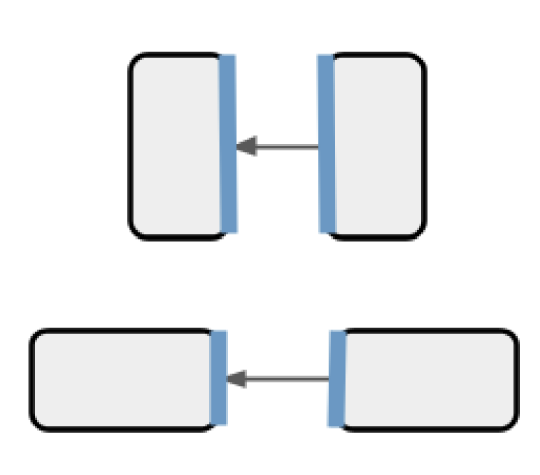
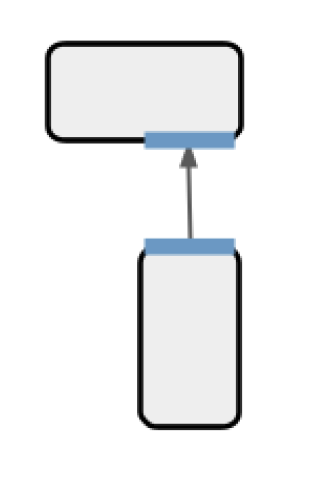
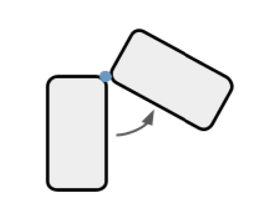
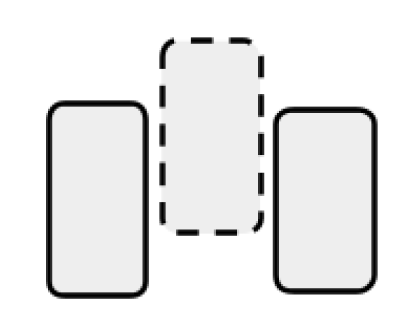
I organized the prototype mechanics into a hierarchy based on connection, pivot, disconnection, alignment, timing, and the number of phones involved. The hierarchy gave the team a shared vocabulary for evaluating new ideas and locating repeated interactions within the larger mechanic space.
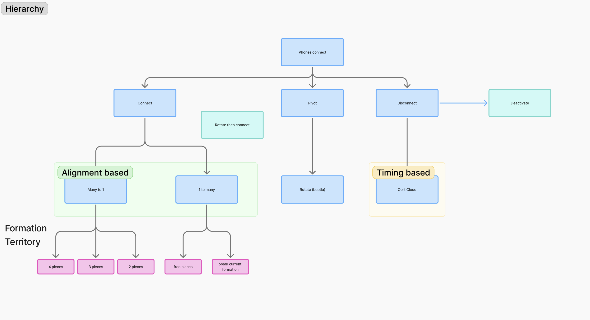
I focused on how players interpreted these mechanics in context: what visual state suggested the intended motion, how much demonstration was needed, and whether players could recognize the same relationship when it returned in a different puzzle.
Reintroducing Tap Later
For much of development, we deliberately kept conventional touch input out of the core interaction model. That gave us room to push the physical mechanics as far as possible and made the four-phone setup earn its place in the design.
In the latter half of the project, the problem changed. We were no longer testing isolated interactions; we were building a complete narrative experience with more information, objects, and puzzle states. Playtests showed places where players still expected direct touch and where refusing that expectation added friction without adding meaningful physical play.
We reintroduced tap as a supporting input. It did not replace Match, Plug, Pivot, or Remove. The four physical mechanics remained the defining interaction vocabulary, while tap handled moments where a conventional action made the larger experience clearer.
05 Teaching Physical Mechanics Through Play
- Encounter a physical relationship between phones
- Perform the mechanic in a guided context
- Recognize the relationship in a new puzzle
- Combine the mechanic with previously learned interactions
Once the interaction vocabulary stabilized, the design question became how to teach it without turning the experience into a long tutorial.
I planned playtests around increasingly larger questions. First, could players perform a mechanic after seeing its visual setup? Next, could they recognize that same relationship when the art, orientation, or objective changed? Finally, could the group coordinate several learned mechanics in a larger puzzle without prompting?
Those observations shaped the mechanic sequence. Early content gave one physical relationship a clear purpose. Later puzzles reused familiar relationships under new conditions. The progression then combined mechanics so that difficulty came from reading the game state and choosing the right relationship, not from introducing a new control for every challenge.
This was also where the project shifted from interaction experiments into content design. The mechanics no longer existed as demonstrations. They became a vocabulary that could carry puzzle logic across the full experience.

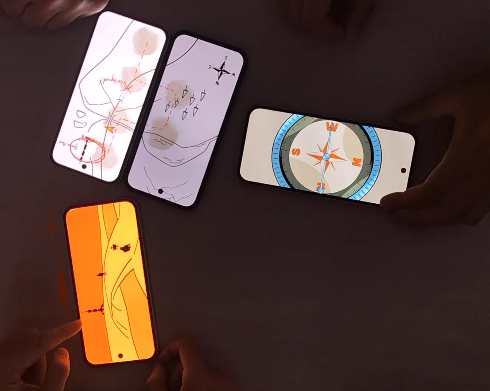
06 Integrating Narrative With Collaborative Play
Population One was a shared narrative experience. Four people had to coordinate unfamiliar physical puzzles and still leave each sequence with a common understanding of Naiad's journey.
That made player attention a design constraint. During playtests, the broad premise came through, but players often missed story details while discussing phone placement and solving the immediate puzzle. One player summarized an early version as:
"Astronaut talking via erratic smartphones."
The problem was not a lack of narrative content. The timing was wrong. Puzzle solving already demanded visual attention, physical coordination, and group communication. Important story information delivered at the same time had to compete with all three.
I worked with our narrative designer to restructure the flow so that major story beats landed after puzzle completion through comic-inspired sequences. A solved puzzle created a natural pause in coordination. We used that pause to let the group absorb the same story beat before the next objective started.

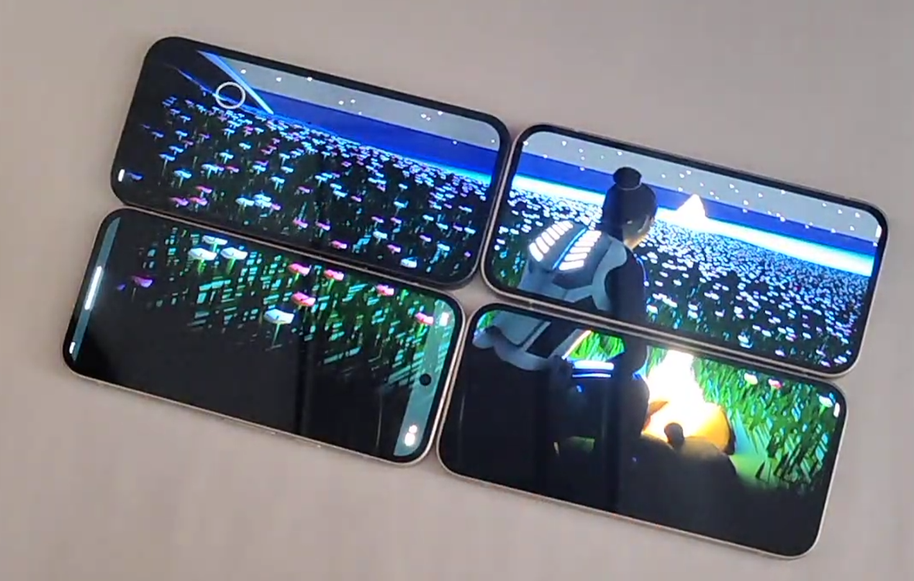


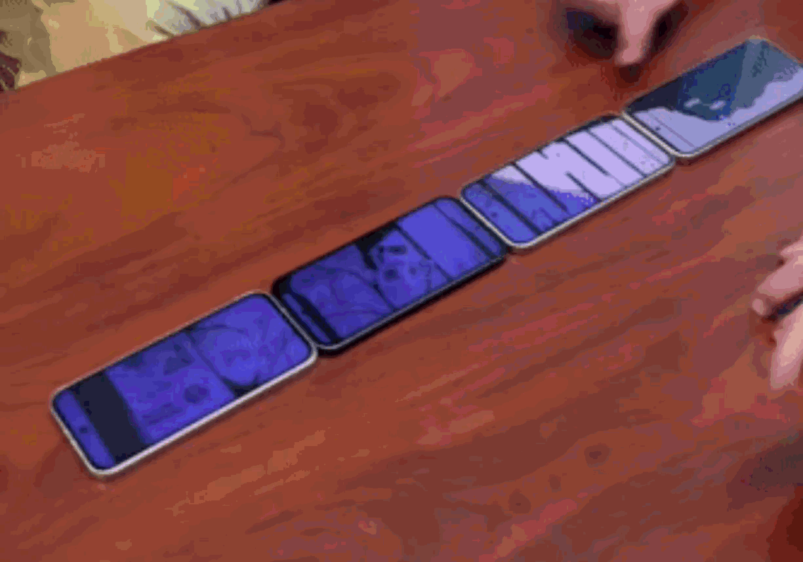
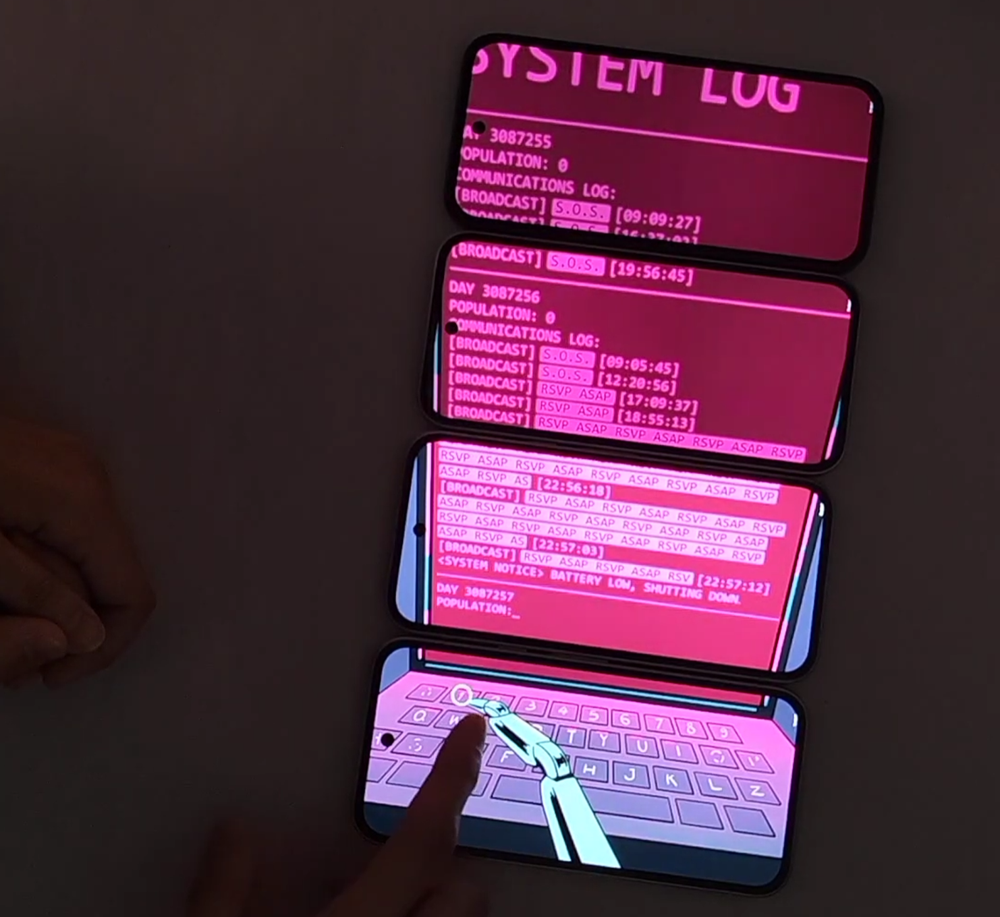
07 Structuring Puzzle and Level Progression
As individual puzzles became more developed, I needed to see the experience as one connected system: what could players access, what did each state require, what had already been learned, and where did each path return?
I created the progression diagram below to map hubs, puzzle states, gates, key objects, branching paths, and narrative progression. It let me reason about the order of content without treating every puzzle as an isolated challenge.

The watch, camera, compass, and key in this diagram were design concepts for progression and gating. They did not become a player-facing inventory system in the final game. I was using them to test key-lock relationships: which discovery or completed state should make another piece of content available.
This map helped answer practical design questions before implementation was locked: when a player could branch away from a hub, what information had to be acquired before a door or puzzle made sense, and whether a path returned players to the right place in the narrative.
It also helped connect two scales of design. At the small scale, Match, Plug, Pivot, and Remove defined what players could do. At the larger scale, the progression map defined when those abilities mattered, what they unlocked, and how the sequence carried players toward the ending.
08 Turning Playtests Into Design Decisions
Because the interaction model had few established conventions, playtesting was our way to separate an interaction that looked interesting from one that players could actually use as part of a game.
I planned sessions around specific design questions and documented what players did before we explained anything. The most useful findings were often moments where player behavior contradicted our assumptions. Those moments gave us a clear next design decision.

| Design Question | What We Observed | Design Decision |
|---|---|---|
| How much instruction do the physical mechanics need? | Players could understand a physical relationship quickly once its visual setup and first use were clear. | Kept onboarding concise and relied on repeated use to reinforce the interaction vocabulary. |
| Can players transfer a learned mechanic to a new puzzle? | Recognition depended on whether the new visual state still communicated the same phone relationship. | Designed later puzzles to vary context while preserving readable relationship cues. |
| How far should we reject conventional touch input? | In the longer-form experience, players still reached for direct touch in places where a physical action did not add useful meaning. | Reintroduced tap in the latter half as supporting input while keeping Match, Plug, Pivot, and Remove as the core physical mechanics. |
| Can players follow the story while solving? | Players understood the premise but missed details while coordinating unfamiliar puzzles. | Moved major story beats to the pause immediately after puzzle completion. |
09 Delivering the Final Experience
The final game was the result of two different phases of design work: first expanding the interaction space through technical prototypes, then constraining those discoveries into a coherent 20-minute experience.
Match, Plug, Pivot, and Remove gave the game its physical vocabulary. The learning progression taught players how to recognize those relationships. The puzzle structure determined when each relationship returned and what it unlocked. The narrative flow gave the group shared moments to understand why they were progressing.
Public Showcase
The project extended beyond the playable build through its website, GDC outreach, live demonstrations, and conversations with professional designers. We presented Big Picture Studio at the GDC Festival of Gaming and observed new groups coordinating around the four-phone interaction system.
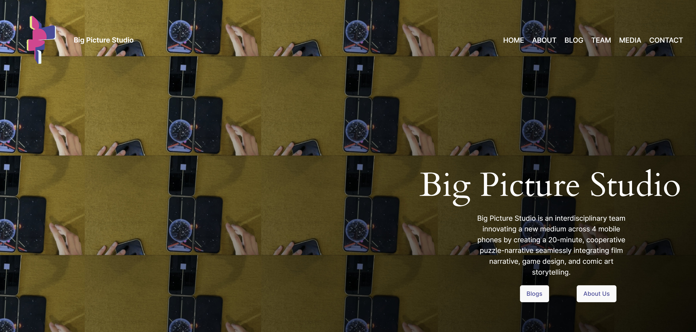


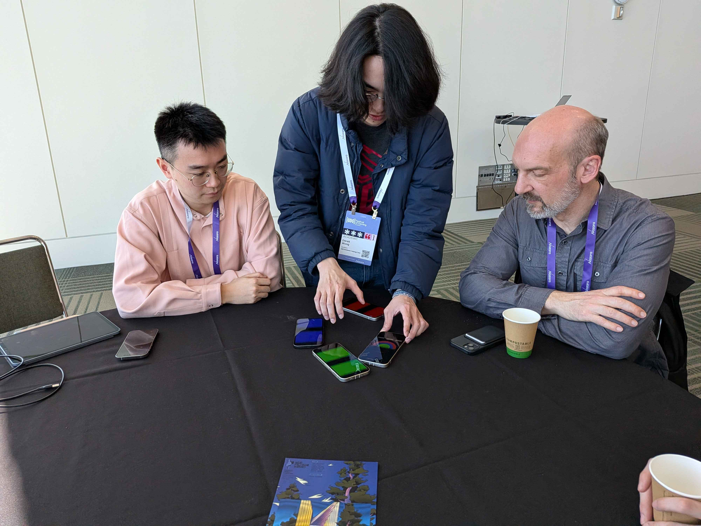
Reflection
Population One changed how I think about game design for an unfamiliar medium. The first job was not to invent a large number of puzzles. It was to find the smallest set of interactions with enough depth to support a full experience.
I also learned that protecting a design value does not mean protecting every early assumption. We intentionally pushed away from touchscreen convention because that constraint helped us discover the project's strongest physical mechanics. Later, when the full experience needed a small amount of direct touch, we brought tap back for a clear reason without giving up the interaction language we had built.
The part of the project I value most is the progression from experimentation to structure: prototype broadly, identify what the medium does well, teach those mechanics through play, connect them through puzzle dependencies, and place narrative beats where the group has attention to receive them.